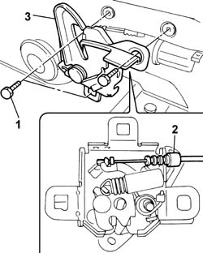
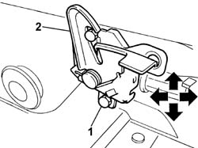

7025A34 bonnet lid lock (one) - r+r or repair
- Path
- Procedures > 70 FITTINGS > 7025 COMPARTMENT LIDS > 7025A bonnet lid > 7025A34 bonnet lid lock (one) - r+r or repair
- Kind
- repair procedure (removal / refitting; the operation number is the code)
- Applies to
- all engines; all production periods
- Interactive page
- https://sloeber94.github.io/elrnDB-fPnd/en/#/2753138
Applies to: all engines; all production periods
 Removing
Removing
 Refitting
Refitting1. Undo the retaining bolts.
Extract the lock.
2. Disconnect the lock opening cable.
3. Remove the catch.

Applies to: all engines; all production periods
Refitting
RemovingCheck that the catch is undamaged.
Connect the lock opening cable.
Fit the catch.
1. Screw in the retaining bolts without tightening.
2. Move the lock into the correct position using the bolt slotted openings.

Applies to: all engines; all production periods
Close the bonnet lid and check that the striker and the lock fit together properly and that they are aligned with the bonnet closed.
Tighten the catch retaining bolts.
Check that the lock is working properly.